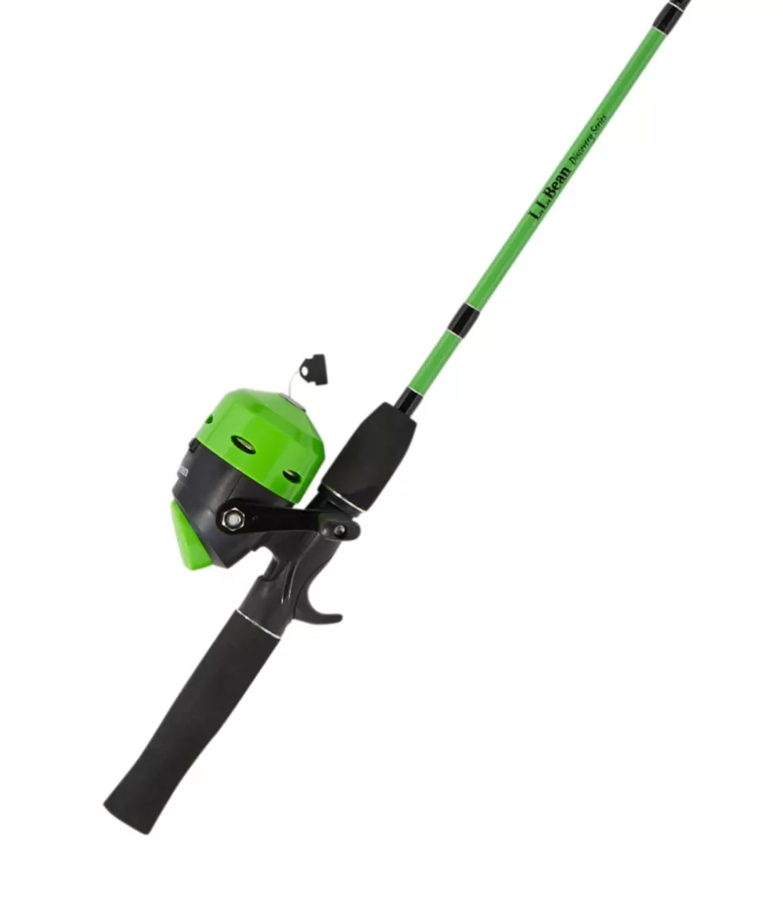

L.L Bean Discovery Spincast Combo

(L.L.Bean, n.d.)
The L.L Bean Discovery Spincast Combo is both lightweight and durable. Like most push-button combos, anglers can hold the button down and release it at eye level when casting bait. The handle is firm and easy to grip, making it useful for beginners and children to cast.

(L.L.Bean, n.d.)
This combo is simple to transport and store, making it useful for spontaneous fishing. However, this combo is not meant to catch big fish; it is designed for smaller fish such as bluegill, crappie, and small bass. This combo goes for around $40-$50!
References
- L.L.Bean. (n.d.). Discovery spincast combo, 5’ [Photograph]. https://www.llbean.com/llb/shop/124376
- Fox News. (2025, July 31). The angler’s guide to the best fishing rods. https://www.foxnews.com/deals/anglers-guide-top-fishing-rods